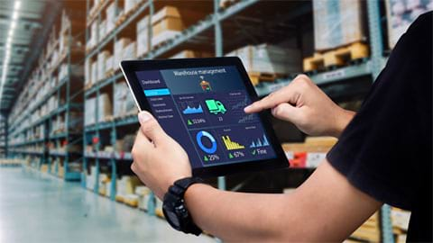
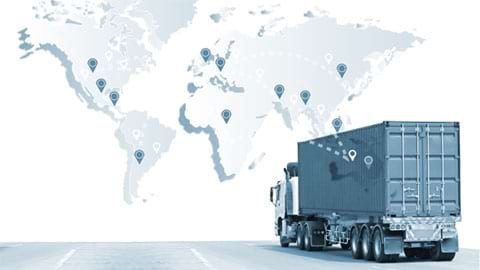

Business Portfolio
모빌리티 테크놀로지
01
NIA의 지능형 통합 교통 플랫폼을 통하여 실시간 위치 추적,
교통량 관제, 차량, 거리 및 비용 계산 등의 빅 데이터를
수집하고, 제공된 솔루션의 빅데이터를 활용하여
수요 예측, 위험 관리, 대응이 가능합니다.
제품 및 서비스
-
 01Mobility Technology
01Mobility TechnologyITS (지능형 교통 체계) 개발
수년간 축적한 다양한 기술과 지식으로 교통 플랫폼을
기획, 설계, 개발하며, 최종적으로 전자, 정보, 통신 등
최신 기술을 운영하여 교통 시스템의 효율성 및
안정성을 높이는 것을 목표로 합니다. -

창의적이고 다양한 교통 및 통신 기술
위치, 물류, 승객, 차량 및 빅데이터 처리 모니터링 솔루션을
포괄하는 지능형 교통 체계(ITS)를 비롯한
세계 최고 수준의 ICT 기술을 보유하고 있습니다. -

교통·물류·승객을 위한 플랫폼 구축 및 운영
인도네시아에서 다방면으로 축적된 환경 및 교통 연구 데이터와
현재 한국에서 개발 및 운영 중인 기술과 방안을 결합하여
최적의 플랫폼을 구축합니다.

예약·예매 시스템
02
NIA의 대표 제품 및 서비스에 티켓 예약 및 예매 시스템이 포함되어 있으며
이 솔루션을 통해 고객에게 효율적이고 안정적인 예약·예매 경험을 제공합니다.
현대 기술을 갖춘 예약·예매 시스템을 통하여 여정 계획 시 편리함을 제공하고
언제 어디서나 안전하고 편리하게 티켓을 구매할 수 있는 서비스를 제공합니다.
제품 및 서비스
-
 02Ticketing System and Reservation
02Ticketing System and Reservation리포트 및 통계 데이터를 통한
리포트와 통계 데이터를 통하여 사용자에게 중요한
최신 비즈니스 분석 정보 제공
비즈니스 분석 정보를 제공하며, 이 데이터를 바탕으로
비즈니스 성과의 이해도를 높이고, 보다 전략적인 결정과
계획을 수립할 수 있습니다. -

무인발권기(키오스크) 및 매표소를 통한
무인발권기(키오스크)와 매표소 서비스를 통해 예약·예매가 가능하며, 인터넷 접속 장애 발생시 매표소의 '비상발권
예약·예매 서비스
시스템'을 통하여 효율적인 예약·예매 서비스를 제공합니다.
이 옵션을 통하여 고객은 온라인 연결 없이도 보다 쉽게
서비스를 예약할 수 있으며, 이러한 예약 기능은 편리한
접근과 거래 효율성을 제공하여 원활하고 효율적인
고객 경험을 보장하도록 설계되어 있습니다.

결제 시스템
03
결제 시스템과 관련된 다양한 제품 및 서비스를 제공하고 있으며
이러한 제품 및 서비스는 고객에게 쉽고 안전한 금융거래 및
관리 서비스를 제공합니다.
이외에도 비즈니스의 지속 가능성과 재무 거래의 보안을
지원하고 효율적이고 신뢰할 수 있는 결제 솔루션을
제공하기 위해 최선을 다하고 있습니다.
제품 및 서비스
-
 03Payment System
03Payment System종합적 결제 방법
원활한 거래를 위해 다양한 결제수단을 제공하고 있으며
다양한 결제 옵션을 통해 고객이 원하는 결제방법을
선택할 수 있는 유연성과 편의성을 제공하여
더욱 더 편리하고 효율적인 거래 경험을 제공합니다. -
취소환불, 정산, 집계 리포트 등의
원활하고 정확한 재무거래를 보장하기 위하여
생성 및 처리
취소환불, 정산, 집계 리포트 생성 및 처리를 관리하며
이에 대한 효율적인 대응서비스 제공 및 고객의 만족도
충족을 위하여 최선의 노력을 다하고 있습니다. -

쉽고 빠른 API 통합
쉽고 빠른 API 통합 제공으로 다양한 플랫폼 및 앱과 시스템 간의
연계를 용이하게 하며, 이를 통해 고객은 다른 솔루션과 시스템의
기능을 효율적으로 결합하여 데이터 및 운영 관리를 위한
최적의 서비스를 제공합니다. -

안전하고 믿을 수 있는 거래 시스템
안전하고 신뢰할 수 있는 거래 시스템 제공을
통하여 높은 수준의 보안과 신뢰성을 보장하고,
고객이 안심하고 거래를 수행할 수 있도록 도와주며
모든 거래가 원활하고 효율적으로 실행되도록 합니다. -
결제 거래 자동 기록
모든 결제 거래를 자동으로 기록하는 과정을 통해
재무 보고의 효율성과 정확성을 보장하며
재무 관리에 용이함을 제공하고 데이터 정확성을 보장합니다.

IT 서비스 운영 및 관리
04
IT 서비스 운영 관리는 IT 시스템 및 서비스의 성능을
관리하고 향상하는 데 도움을 주기 위해 설계된
다양한 제품과 서비스를 포함합니다.
이를 통해 IT 서비스의 효과적인 계획, 운영, 모니터링을
지원하는 통합 솔루션을 제공하며 효율적인 서비스 관리에
중점을 두어 회사의 생산성, 효율성 및 운영 안정성을 향상시키는 데 도움이 될 수 있습니다.
제품 및 서비스
-
04IT Service Management
간편한 비즈니스 KPI 관리
비즈니스 KPI(핵심성과지표) 관리를 심플하고 용이하게
할 수 있으며, 이러한 접근 방식을 통해 사용자는 보다
실용적이고 효과적인 모니터링이 가능합니다. -
전문 지원 서비스, 원격 교육, 채팅
원격 교육, 채팅 등 전문적인 지원 서비스를 제공하며
높은 전문성을 바탕으로 고객의 요구에 맞는
안정적인 솔루션을 제공합니다. -

유연한 소매, 유통업, 공장 시스템 관리
소매, 유통업, 공장 시스템 등의 다양한 비즈니스 부문의
요구를 충족할 수 있는 플랫폼으로 설계되었으며,
이 플랫폼은 다양한 산업 분야의 운영 모델 및
비즈니스 요구에 따른 솔루션을 제공합니다. -

급변하는 시대의 효율적인 솔루션
급변하는 시대 및 생산 과정에 대한 유연한 적응이 가능한
시스템 및 서비스를 제공하도록 준비되어 있으며,
신속하고 효율적인 솔루션을 통하여 고품질의
시스템을 유지합니다.

물류 및 배송 시스템
05
NIA의 물류 및 배송 시스템은 정교하고 안정적인 솔루션으로
설계되어 상품 관리와 배송 모두에 있어 최적의 원활한
서비스를 보장하며, 모든 고객에게 효율적이고 만족스러운
시스템을 제공하기 위해 최선을 노력을 다합니다.
제품 및 서비스
-

05Logistic and Delivery System
물류차량 실시간 위치 추적 및 모니터링
물류차량의 위치를 실시간으로 모니터링하고 추적하는 기능으로
최신 기술을 통해 배송 및 물류 관리의 효율성을 강화합니다. -

자동화된 비즈니스 보고 및 분석
자동화된 비즈니스 보고 및 분석 서비스는 회사 성과 평가 과정을
단순화 시키는데 도움이 되며, 정교한 자동화 기술을 활용하여
보다 정확한 보고서와 효율적인 심층 분석 서비스를 제공합니다.
이를 통해 비즈니스 현황 파악 및 전략적 의사결정을 용이하게
하며 운영 효율성을 향상시킬 수 있습니다. -
상품 배송
안정적이고 효율적인 물류 시스템을 통해 모든 제품이
정시에 도착하도록 보장하여, 고객에게 최고의 상품 배송
경험을 제공합니다. -

사다리 차량을 활용한 편리한 이사(아파트, 주택, 고층건물 등)
선진화된 기술과 숙련된 인력으로 사다리 차량을 활용한
효율적이고 안전한 아파트, 주택, 고층건물 이사 서비스를
제공합니다.

라이브 스트리밍 플랫폼
06
NIA의 대표적인 서비스는 라이브 스트리밍 플랫폼을 중심으로
이루어지며 최신 기술을 통합하고, 사용자 경험을 최적화
함으로써 사용자에게 고품질의 매력적인 라이브 스트리밍 경험을 제공하고 있습니다.
이 서비스를 통해 우리는 고객의 요구와 기대에 부응하여
더욱 더 상호적이고 만족스러운 고객 경험을 제공하고자
최선을 다하고 있습니다.
제품 및 서비스
-
 06Live Streaming Platform
06Live Streaming Platform웹/앱 및 화상 통화를 통한 온라인 상담
홈페이지, 모바일 앱, 영상통화 등 다양한 플랫폼을 통해
온라인 상담 서비스를 제공하며 최신 기술을 활용하여
고객이 개인 통신 기기를 통해 편리하고 효율적인
상담을 받을 수 있도록 지원합니다. -

AI, 머신러닝 및 빅 데이터 활용
비즈니스의 단순화를 위하여 인공지능(AI), 머신러닝,
빅데이터를 활용한 비즈니스 간소화 솔루션을 제공합니다.
이 기술은 신뢰할 수 있는 파트너일 뿐만 아니라
비즈니스의 효율적인 관리와 개발을 제공합니다.